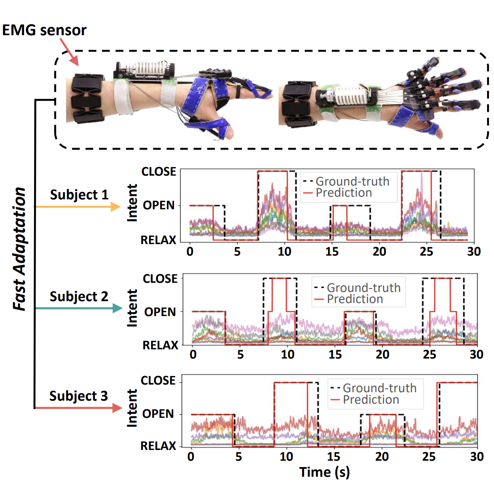

IEEE/RSJ IROS 2024 · first author
Meta-Learning for Fast Adaptation in Intent Inferral on a Robotic Hand Orthosis for Stroke
MyHand, a tendon-driven hand orthosis, is controlled by surface-EMG intent signals that drift between sessions and users. I framed calibration as a few-shot problem and applied MAML to learn high-capacity classifiers that adapt from a handful of examples at the start of each use.